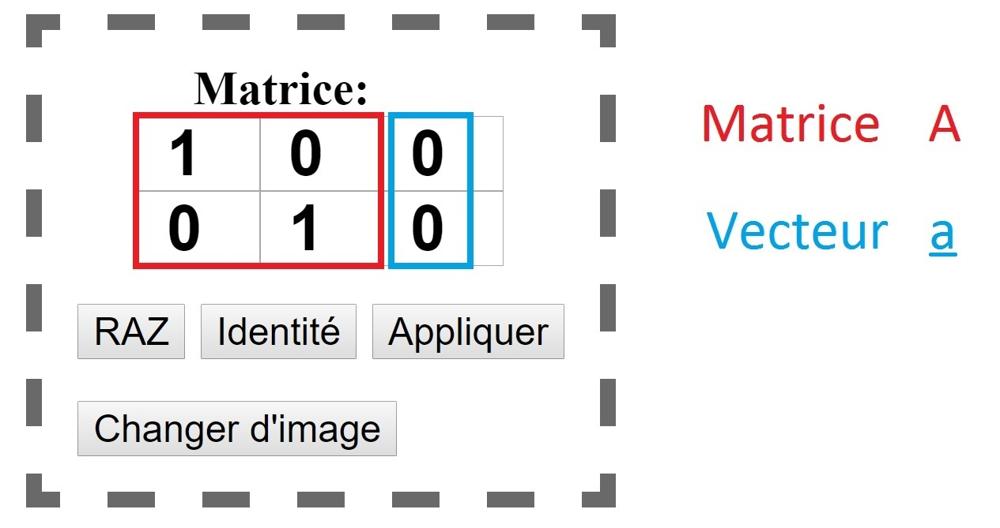

Les matrices sont des objets mathématiques que l'on peut définir simplement comme des "tableaux de nombres". La plupart des opérations standard sur des nombres réels ont une équivalence pour les matrices:
On peut aussi multiplier les matrices par des vecteurs, ce qui donne un autre vecteur.
Dans un repère cartésien, les points peuvent être représentés par des vecteur, appelé vecteur position. Pour effectuer une transformation, il est donc possible de multiplier tous les vecteurs position des points d'une image par une même matrice. Il se trouve que cette méthode marche très bien, c'est à dire que pour effectuer une transformation d'image donnée, on peut facilement trouver la matrice correspondante.
Comme on multiplie les vecteurs position des points par une matrice, il est logique que la matrice identité n'effectue aucune transformation sur l'image.
L'opération effectuée par l'ordinateur lrosqu'on lui donne une matrice est simple: il divise la matrice 2*3 en une 2*2 et un vecteur comme le montre la figure suivante:
Pour chaque vecteur position r il fait l'opération r' = A * r + a. Les vecteurs positions r' définissent la nouvelle image.
Entrez ici une matrice pour voir quelle transformation elle effectue sur une image: